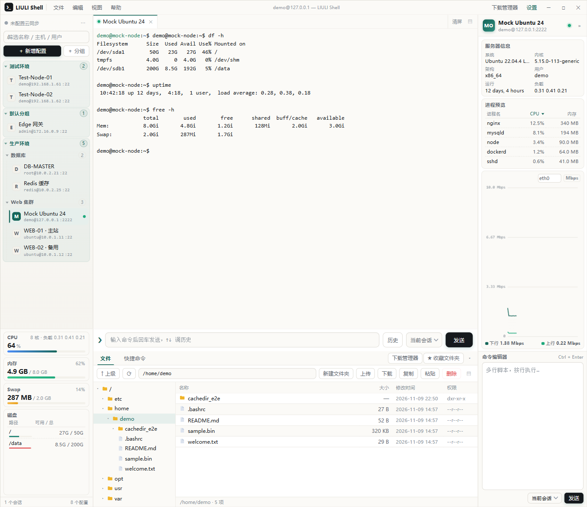
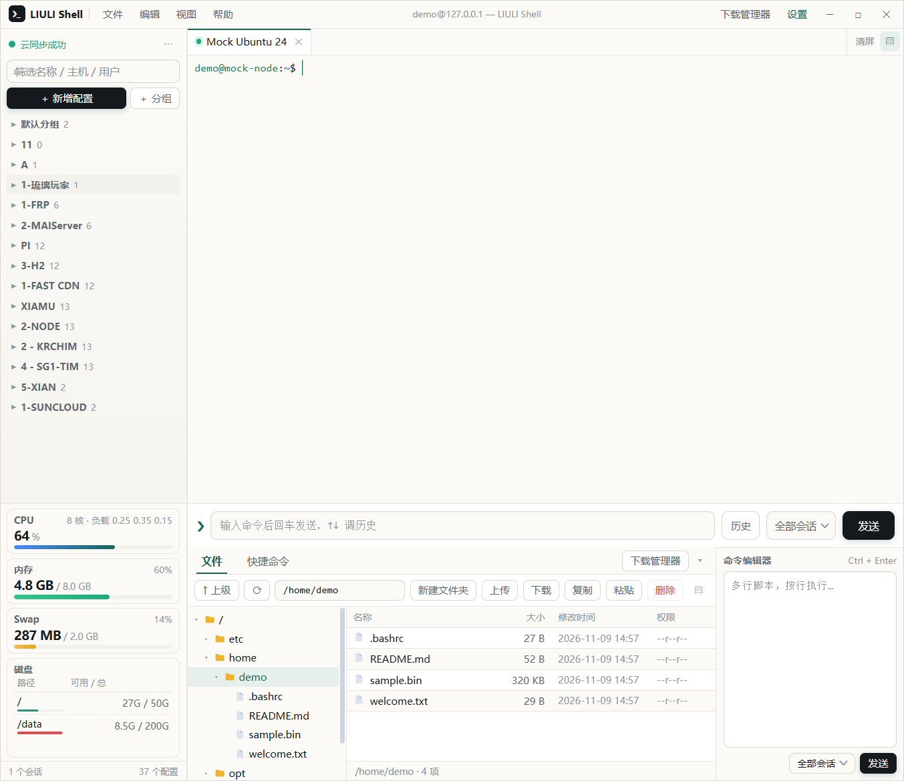
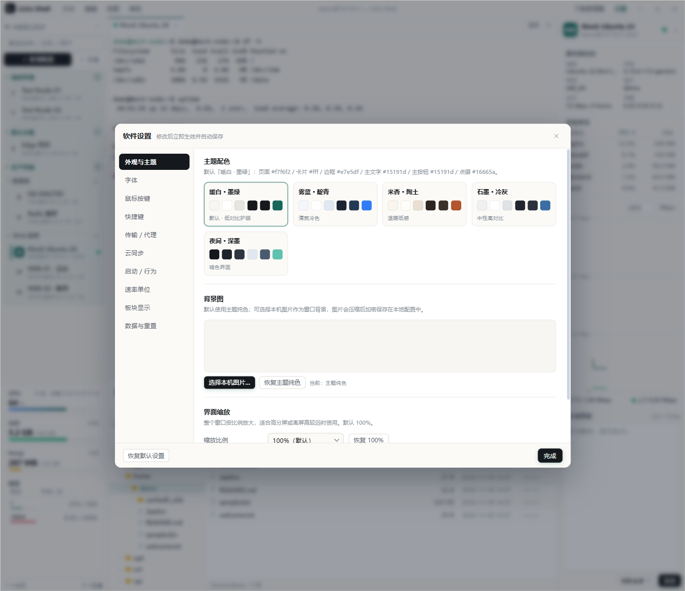

❯_
多标签 SSH 终端
每个标签独立会话，状态灯区分在线与断开；可拖动排序，右键重连或关闭其他。
多标签终端、SFTP 文件、实时监控与云同步，都在一个三栏窗口里。 界面轻、操作直接，长时间挂着也不累。

终端、文件、监控、同步，不必再开四个工具。
每个标签独立会话，状态灯区分在线与断开；可拖动排序，右键重连或关闭其他。
目录树与文件列表联动，拖拽上传、整目录下载、复制粘贴，内置文本编辑器。
CPU、内存、磁盘、网卡与进程预览；实时速率和累计流量同屏查看。
独立窗口管理传输任务，可暂停、取消、清空，开始下载时自动弹出。
配置、分组与收藏加密同步，多设备双向合并，不丢本地改动。
一次导入多个 JSON 或整个文件夹，自动建立最多三级分组。
左服务器、中终端、右监控；宽度与高度可拖动，不用的板块随手收起。


高频操作都做了针对性处理，不必记命令。
每个标签独立 SSH 会话，状态灯区分在线 / 不稳定 / 断开。
目录树与文件列表联动，终端 cd 后自动跟随。
/左侧监控与右栏进程/网络详情持续刷新。
下载管理器独立窗口，开始下载时自动打开。
换机、迁移与多设备协作都有专门入口。
三栏工作台、可调宽度与高度、可隐藏板块。
点左侧主题名即时预览整窗效果，终端 ANSI 色板同步变化。
当前版本 v1.13.7 · Windows x64。安装包与便携版任选。
Linux / macOS 请在对应系统上自行构建：Linux 产出 AppImage、.deb 与 tar.gz；macOS 产出 dmg 与 zip。教程含各发行版依赖命令与常见报错处理。
查看构建教程Windows 直接用下载区的安装版或便携版即可；Linux 与 macOS 需要在对应系统（或同架构 CI）上自行构建。下面是「装依赖 → 拉源码 → 打包 → 运行」的完整流程，含各发行版差异与常见报错处理。
三步拿到安装包：先清掉旧目录 → 拉源码 → 打包。切换系统查看对应命令，整段可直接复制到终端。
# 1) 先删掉旧目录再克隆，避免上次残留的文件让构建异常 rm -rf liuli-shell git clone https://gitee.com/liuliwanjiaweb/liuli-shell.git cd liuli-shell # 2) 一条命令搞定：识别发行版 → 补系统依赖 → 选 deb / AppImage → 打包 → 询问安装 bash scripts/build-linux.sh # 3) 依赖没装上或构建报错时，再依次尝试（随时可中断，不影响系统） bash scripts/build-linux.sh repair bash scripts/build-linux.sh deps bash scripts/build-linux.sh
产物在 dist/。脚本会按版本自动选 *t64 包名并回退；非交互场景可加参数，如 bash scripts/build-linux.sh deb、... appimage、... -y。
# 1) 基础环境（已装过会自动跳过，命令都带容错） xcode-select --install 2>/dev/null || true command -v brew >/dev/null || /bin/bash -c "$(curl -fsSL https://raw.githubusercontent.com/Homebrew/install/HEAD/install.sh)" command -v node >/dev/null || brew install node@20 brew link --overwrite --force node@20 >/dev/null 2>&1 || true # 2) 先删掉旧目录再克隆 rm -rf liuli-shell git clone https://gitee.com/liuliwanjiaweb/liuli-shell.git cd liuli-shell # 3) 装依赖并打包（npm ci 失败自动回退 npm install） npm ci || npm install npm run vendor npm run dist:mac
产物在 dist/（.dmg / .zip）。只打当前架构更快：npx electron-builder --mac dmg zip --arm64。
https://gitee.com/liuliwanjiaweb/liuli-shell克隆地址：https://gitee.com/liuliwanjiaweb/liuli-shell.git。国内网络访问 Gitee 更快，遇到 Electron 下载慢时再配合镜像变量即可。
按发行版选命令：不同版本的系统库包名并不相同（Ubuntu 24.04 起改为 *t64），照抄旧教程必报「无法定位软件包」。三份产物各有用途：AppImage 免安装、.deb 走包管理、tar.gz 解压即用且不依赖 FUSE。
scripts/build-linux.sh 会自动识别发行版并处理 t64 包名回退。bash scripts/build-linux.sh 一条命令完成「识别发行版 → 补系统依赖 → 选包类型 → 打包 → 询问安装」，已兼容 apt / dnf / pacman。只想装依赖用 ... deps，只体检用 ... check，环境坏了用 ... repair。安装阶段：deb 走 apt install 并建桌面图标，AppImage 复制到 ~/Applications/LIULI-Shell 并生成应用菜单与桌面图标。chmod +x dist/LIULI-Shell-*-x86_64.AppImage ./dist/LIULI-Shell-*-x86_64.AppImage # Debian / Ubuntu 安装 deb sudo apt install ./dist/LIULI-Shell-*_amd64.deb # 解压即用（不需要 FUSE，也不写入系统目录） mkdir -p ~/Applications tar -xzf dist/LIULI-Shell-*-x86_64.tar.gz -C ~/Applications ~/Applications/LIULI-Shell-*/liuli-shell
AppImage 使用 type-2 运行时，需要系统的 FUSE 2。Ubuntu 22.04 之前默认自带，24.04 / 26.04 需要手动安装；没装 FUSE 也可以临时解包运行。
# Ubuntu 24.04 / 26.04 sudo apt install -y libfuse2t64 # Ubuntu 20.04 / 22.04、Debian 12 sudo apt install -y libfuse2 # 不装 FUSE 直接运行（启动稍慢，功能一致） ./LIULI-Shell-*-x86_64.AppImage --appimage-extract-and-run # 或者干脆用 tar.gz 版本，完全不依赖 FUSE
# 1) 放到固定位置 mkdir -p ~/Applications cp dist/LIULI-Shell-*-x86_64.AppImage ~/Applications/LIULI-Shell.AppImage chmod +x ~/Applications/LIULI-Shell.AppImage # 2) 取出图标（--appimage-extract 会在当前目录解出 squashfs-root） cd /tmp && ~/Applications/LIULI-Shell.AppImage --appimage-extract '*.png' >/dev/null 2>&1 mkdir -p ~/.local/share/icons/hicolor/512x512/apps cp /tmp/squashfs-root/*.png ~/.local/share/icons/hicolor/512x512/apps/liuli-shell.png 2>/dev/null \ || cp /tmp/squashfs-root/liuli-shell.png ~/.local/share/icons/hicolor/512x512/apps/ 2>/dev/null # 3) 写应用列表项（$HOME 会展开成当前用户目录） mkdir -p ~/.local/share/applications cat > ~/.local/share/applications/liuli-shell.desktop </dev/null || true # 4) 需要桌面图标，再复制一份并标记可信任 cp ~/.local/share/applications/liuli-shell.desktop ~/Desktop/ gio set ~/Desktop/liuli-shell.desktop metadata::trusted true 2>/dev/null || true # 中文环境的桌面目录可能是 ~/桌面，按实际情况替换
装 .deb 的用户不需要这些步骤：deb 安装时会自动写入 /usr/share/applications，应用列表里直接可见。
环境要求：macOS 12+（Intel 或 Apple Silicon），Xcode Command Line Tools、Homebrew、Git、Node.js 20/22 LTS。dmg 不能在 Windows / Linux 上构建。
1. 基础工具
xcode-select --install /bin/bash -c "$(curl -fsSL \ https://raw.githubusercontent.com/Homebrew/install/HEAD/install.sh)" # Apple Silicon 把 brew 写入 PATH（Intel 为 /usr/local/bin/brew） echo 'eval "$(/opt/homebrew/bin/brew shellenv)"' >> ~/.zshrc source ~/.zshrc
2. Node 20 与 Git
brew install node@20 git brew link --overwrite --force node@20 node -v && npm -v # 期望输出 v20.x
3. 源码与依赖（先删旧目录，避免残留文件导致异常）
rm -rf liuli-shell git clone https://gitee.com/liuliwanjiaweb/liuli-shell.git cd liuli-shell npm ci || npm install # 锁文件与平台不一致时回退 npm install npm run vendor # 复制 xterm 资源到 src/renderer/vendor，打包前必须执行
4. 打包（只打当前架构最快；两种都要就给 dist:mac）
npm run dist:mac # x64 + arm64 一起出 npx electron-builder --mac dmg zip --arm64 # 只打 Apple Silicon npx electron-builder --mac dmg zip --x64 # 只打 Intel
5. 产物与缓存：产物在 ~/liuli-shell/dist/（*.dmg、*.zip）；Electron 与打包工具的下载缓存在 ~/Library/Caches/electron/、~/Library/Caches/electron-builder/，删掉可强制重新下载。
6. 未签名安装：拖入「应用程序」后若被 Gatekeeper 拦截，右键「打开」放行，或执行：
xattr -dr com.apple.quarantine "/Applications/LIULI Shell.app" spctl --assess --type execute -vv "/Applications/LIULI Shell.app" # 查看拦截原因
对外分发需要 Apple Developer ID 证书并 notarize：配置 CSC_LINK（.p12 路径或 base64）、CSC_KEY_PASSWORD；公证还需要 APPLE_ID、APPLE_APP_SPECIFIC_PASSWORD、APPLE_TEAM_ID，electron-builder 会自动完成签名与公证。
npx electron-builder --mac dmg --universal（体积约为单架构的两倍，构建也明显更慢）。| 报错 / 现象 | 原因与处理 |
|---|---|
| 无法定位软件包 libasound2 | Ubuntu 24.04 / Debian 13 起系统库统一改名 *t64（如 libasound2t64、libgtk-3-0t64）。先按旧名装、失败自动回退：bash scripts/build-linux.sh deps 已内置该逻辑。 |
| dlopen(): error loading libfuse.so.2 | AppImage 运行时需要 FUSE 2：24.04+ 装 libfuse2t64，22.04 及更早装 libfuse2；不装 FUSE 可用 --appimage-extract-and-run，或直接换 .tar.gz。 |
| Electron 下载超时 / 卡在 downloading | 设置镜像后重试：export ELECTRON_MIRROR=https://npmmirror.com/mirrors/electron/、export ELECTRON_BUILDER_BINARIES_MIRROR=https://npmmirror.com/mirrors/electron-builder-binaries/。 |
| npm ci 失败 / 锁文件与平台不一致 | 删除 node_modules 后改用 npm install；Node 版本过旧（< 18）会直接装不上，改用 Node 20。 |
| rpmbuild not found | 只有打 rpm 时才需要：Fedora 装 rpm-build，Debian/Ubuntu 装 rpm 与 rpm2cpio 相关包，或先跳过 rpm 目标。 |
| Permission denied（运行 AppImage） | 缺执行权限：chmod +x dist/LIULI-Shell-*-x86_64.AppImage。 |
| errSecInternalComponent / 签名失败（macOS） | keychain 被锁定：security unlock-keychain -p <密码> ~/Library/Keychains/login.keychain-db 后重跑；CI 上还需 security set-key-partition-list。 |
dist/。Linux 为 LIULI-Shell-1.13.7-x86_64.AppImage / .deb / .tar.gz，macOS 为 .dmg / .zip。npm run vendor 会把 xterm.js 等前端资源复制到 src/renderer/vendor/，缺少这一步打出来的包终端会是空白。ubuntu-22.04、macos-14 runner）出包。dist/ 下的安装包、便携版与 *.blockmap 作为 Release 附件上传；源码仓库不要提交 node_modules/ 与 dist/。